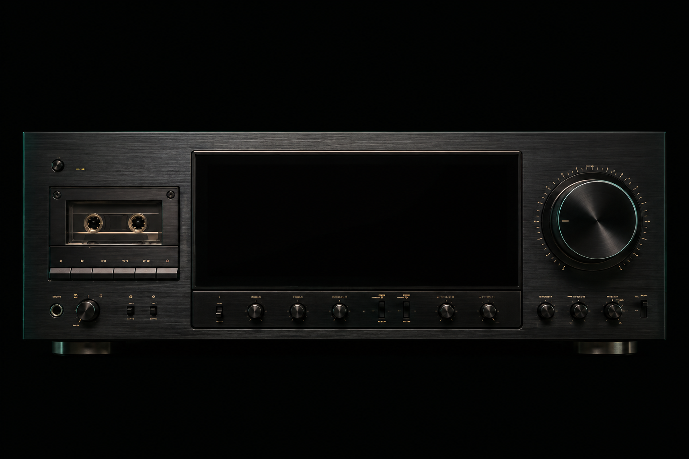
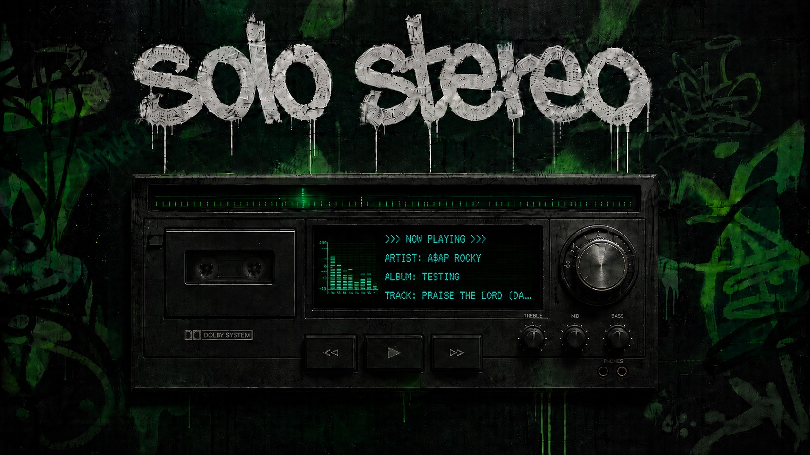

EVERY ERA. EVERY OBSESSION.
Your music.
Still alive.
A decade of listening, with a pulse.

SS / ARCHIVE ENGINE
MEMORIES IN MOTION
ANALOG SOULDIGITAL MEMORY
FROM YOUR RECENT ROTATION
Where Is My Mind?
Pixies · Surfer RosaLiving Tape — your listening history, playing back
RECENT ROTATION01 / 05

SS. SIGNAL FOUND
SOME THINGS STAY WITH YOU.